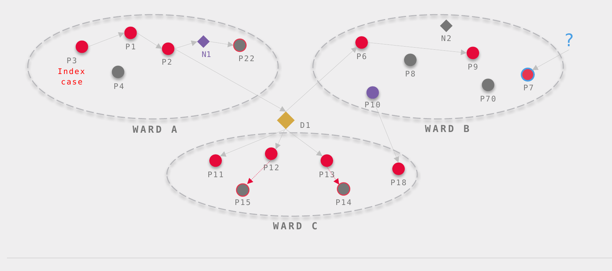

Healthcare-associated infections affect 1 in 10 patients worldwide. Current control measures rely on broad testing and isolation. Effective intervention requires identifying the specific drivers of an outbreak: patient zero, superspreaders, transmission routes, and undetected or imported cases.
Healthcare-associated infections are inevitable. Hospital outbreaks are optional.
Current tools work in silos. Nosotrack fuses their data into a unified analytical engine.

High-acuity, high-cost populations such as transplant, ICU, and immunocompromised patients carry the greatest risk from hospital infections. The units that treat them increasingly run genomic surveillance; Nosotrack turns that surveillance into targeted outbreak control.
We are seeking funding and partner facilities to validate and deploy Nosotrack, turning Bayesian outbreak forensics into a working product on a real hospital floor.